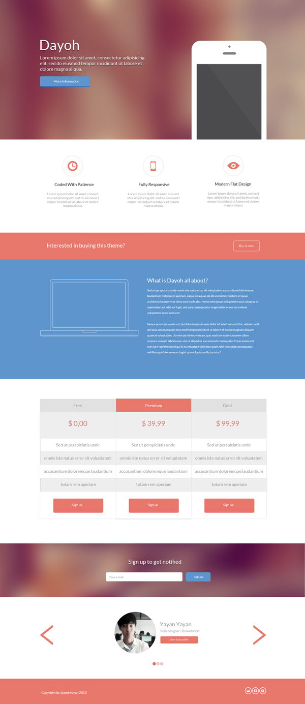

Задание:
Необходимо разработать landing page (посадочную страницу) согласно макету.
Макет выдается преподавателем
Пример макета:

Требования:
-
Кроссбраузерность: Chrome, FireFox, Safari, IE 10-11, Opera, мобильные браузеры Safari, Chrome.
-
Адаптивность: 320, 768, 992 (break point).
-
HTML 5 и CSS3 (HTML и CSS - должны проходить валидацию)
-
Соответствие макету: при накладке допустимы незначительные различия.
-
Сжатые картинки (проверка по Google Page Speed Insights)
-
Анимация и эффекты на ваше усмотрение
-
Минимальное использование JS
-
Все стили должны быть вынесены в style.css
-
При выборе между средствами javascript и чистыми HTML5/CSS3 безусловное предпочтение должно отдаваться последним
-
Если нужен JS - выносить в отдельный файл
-
Блочный вариант верстки, чтобы можно было блоки использовать в любом месте сайта без потери качества
Дополнительные требования:
HTML код:
- Кодировка – utf-8
- Структурный, комментируемый код (обозначается начало/конец крупных блоков). Отбивка табами.
- Семантическая разметка на уровне грамотного использования тегов.
- Имена классов и идентификаторов – осмысленные.
- Классы служат для привязки оформления, идентификаторы – скриптов.
CSS код:
- Структурный, отбивка табами.
- Комментариями обозначены начало/конец крупных модулей/блоков разметки.
- Допускается использование вендорных префиксов.
Javascript код:
- используется фреймворк jQuery 1.7.2. или выше
- для определения поддержки HTML5 используется Modernizr.
- Структурный, отбивка табами.
- Имена переменных осмысленные, на наше усмотрение.
- Снабжен комментариями: описаны назначения (методов/классов, функций, условий).
Изображения:
- Имена файлов осмысленные.
- Проходят базовую оптимизацию на уровне оптимизации для Веб в Photoshop.
- Малые изображения оформления объединенные по назначению и склеиваются в спрайты.
Файловая организация:
- HTML файл лежит в корне. Главная страница – index.html.
- Стили в папке /css/
- Javascript - /js/
- Изображения оформления - /img/
- Изображения содержания - /pic/